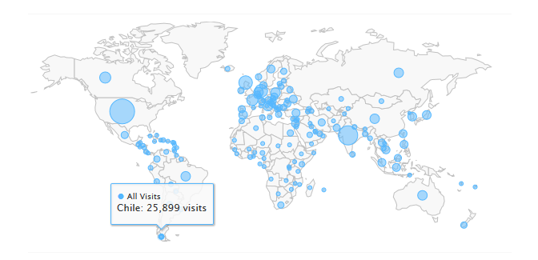

La etapa de implementación o codificación en lo que al proceso de desarrollo de software respecta, es considerada crucial para un proyecto, esto debido a que en esta etapa en particular entre otras tareas, se desarrolla el código fuente del proyecto. Algo muy peculiar en esta etapa, es que los ingenieros de software encargados del desarrollo de código fuente,suelen encontrase con cierto tipo de problemas o errores en su código, es a partir de este tipo problemas que surge una cuestión muy genérica entre los desarrolladores de software: ¿Dónde podría recurrirse o consultar la solución a estos problemas?
Una posible respuesta a la cuestión anteriormente planteada podría ser el de recurrir a plataformas o sistemas web colaborativos, con el objetivo de poder hacer preguntas o revisar soluciones respecto al problema en cuestión. Uno de los sistemas web colaborativos más populares entre los desarrolladores informáticos en la web es denominado:“Stack Overflow”.
Stack Overflow, es uno de los sistemas colaborativos en línea más grande y confiable entre la comunidad de desarrolladores informáticos, en la misma los usuarios puedan hacer y responder preguntas. Existen muchos sistemas exchange, entre ellos algunos bien conocidos Yahoo Answers y Quora, en el siguiente enlace se pueden ver más de estos sistemas. Stack Exchange
| "Monthly StackOverflow Visitors, January 2016" |  |
Existen ya algunos estudios sobre estos sitios, y no solamente de temas de la industria de tecnología sino también de sistemas Q&A en general, por ejemplo sobre Yahoo Answers, el artículo denominado Measuring effectiveness and user satisfaction in Yahoo[1], que analiza 3 puntos: que tan rápido una pregunta es respondida, que tan rápido una pregunta es aceptada por el usuario por que satisface su interrogante y cuál es la relación entre una respuesta que satisface al usuario y el resto de respuestas, éste análisis tiene como objetivo determinar la eficiencia del sistema y la satisfacción del usuario.
Chirag et al [2] hace un estudio para predecir el tiempo de respuesta de una pregunta en StackOverflow, su análisis se basa en el análisis de características basadas en tags: como la popularidad del tag usado en una pregunta, tags populares, la probabilidad de que un conjunto de tags se muestren juntos en una pregunta, número de usuarios suscritos a los tags en base a las preguntas respondidas, y features correspondientes a la reputación de los usuarios y sus tiempos de respuesta, de estos features la reputación del usuario determinada por sus tiempos de respuestas era el feature que proporcionaba mayor fiabilidad al modelo, seguido de la popularidad del tag.
Mining Successful Answers et al [3], es otro de los artículos que estudia como predecir si una respuesta será marcada como aceptada, los factores estudiados son: Calidad de la presentación, afecto, tiempo y reputación o score de la respuesta, a diferencia de Chirag, en este estudio se evalua la calidad de la respuesta con análisis de sentimientos y con un modelo de regresión logística, obteniendo como resultado un mayor porcentaje de eficiencia en la feature de presencia de código en la respuesta, actitud positiva, reputación de la respuesta y del usuario que responde.
La base de datos de Stack OverFlow contiene gran cantidad de información sobre la cual crear distintos features para hacer un clasificador. En la propuesta del presente proyecto se analizará tanto las preguntas, respuestas y usuarios del sistema.